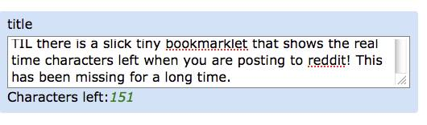

A few subreddits (/politics, /worldnews, etc) it is common to have very long titles. A post will be rejected if the title is over 300 characters. I find it annoying there is no way to know if you have gone over until it is too late. Had to fix that. See how many characters are left as you type in real-time.
Drag the link below to your Browser's link toolbar or right-click to add to your favorites
Reddit Char Counter
Usage
When you are filling out your post, click the new 'Reddit char counter' bookmark and enjoy!
The bookmark is actually a tiny bit of JavaScript which downloads a small char.js file that does the work. It adds the new label and shows the actual characters left as you type.
Anyone interested can view the source code here: char.js
The counter stops working if you click the bookmark more than once on the same page.